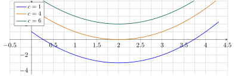
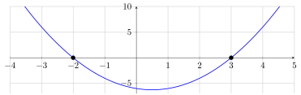
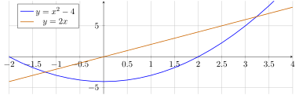
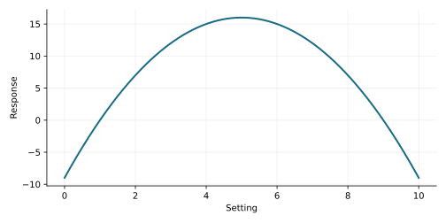

Equations, Inequalities, and Applications
Opening investigation: When is a measurement acceptable?
A clinical laboratory reports a target concentration of \(50\) units per milliliter and allows a tolerance of \(4\) units per milliliter. The acceptable measurements satisfy \(|c-50|\leq4\). Before solving, sketch a number line and identify which values you expect to be included. Then translate the absolute-value statement into two ordinary inequalities. This single example anticipates a central theme of the chapter: an equation describes exact agreement, whereas an inequality describes a range of possibilities.
Learning outcomes
By the end of this chapter, students should be able to (1) solve and verify linear equations; (2) solve quadratic equations by factoring, square roots, completing the square, and the quadratic formula; (3) identify excluded values and check proposed solutions of rational and radical equations; (4) solve and graph linear, compound, quadratic, rational, and absolute-value inequalities; (5) build and interpret equations and constraints from applied situations; and (6) use R and Python to visualize and numerically verify results without mistaking numerical evidence for proof.
Prerequisite diagnostic
Without technology, simplify \(3(2x-1)-2(x+4)\); factor \(x^2-9\); determine the sign of \(-3(2-5)\); and describe \(|x-7|\) as a distance. Answers: \(4x-11\), \((x-3)(x+3)\), positive, and the distance from \(x\) to \(7\). Review Chapter 1 if any of these ideas remain uncertain.
Equations as statements of equality
An equation asserts that two expressions have equal values. Solving means finding all values in the stated domain for which the assertion is true. An equation may have one solution, several solutions, no solutions, or infinitely many solutions. The distinction between a solution and an algebraic manipulation is important: every final candidate should be substituted into the original equation.
Equivalent transformations
Adding the same real number to both sides, subtracting the same expression, and multiplying or dividing both sides by the same nonzero number preserve equality. Multiplication by an expression that could equal zero requires caution. Squaring both sides can introduce extraneous candidates, while dividing by a variable expression can discard legitimate solutions if that expression might vanish.
Example 1: A linear equation with parentheses. Solve \(3(2x-5)-2(x+1)=11\).
Worked solution. Distribute: \(6x-15-2x-2=11\). Combine like terms: \(4x-17=11\). Add \(17\): \(4x=28\). Divide by \(4\): \(x=7\). Check: \(3(14-5)-2(8)=27-16=11\). Thus \(\boxed{x=7}\).
Example 2: An identity and a contradiction. Compare \(2(x+3)=2x+6\) and \(2(x+3)=2x+7\).
Worked solution. The first simplifies to \(2x+6=2x+6\), true for every real \(x\); its solution set is \(\mathbb R\). The second becomes \(6=7\), which is false for every \(x\); its solution set is \(\varnothing\). Neither should be reported as “\(x=0\).”
Guided practice 1.
Solve \(5-2(3x-4)=19\), and verify by substitution. Then classify \(4(x-2)=4x-8\) as conditional, identity, or contradiction. Check: \(x=-1\); identity.
Modeling with linear equations
The most difficult step in many applications is not algebra but choosing a variable and translating words into quantities. A robust modeling routine is: define the unknown with units; write a relationship; solve; check units and assumptions; and interpret the result in context. Never interpret a negative mathematical answer as physically meaningful without examining the model.
Example 3: Mixture concentration. A solution contains \(12\) mg of a substance in \(80\) mL. How much pure water must be added to reduce the concentration to \(0.10\) mg/mL?
Worked solution. Let \(w\) be milliliters of added water. The amount of substance remains \(12\) mg and the final volume is \(80+w\) mL. Hence \(12/(80+w)=0.10\). Multiply: \(12=8+0.10w\), so \(w=40\) mL. The final concentration is \(12/120=0.10\) mg/mL.
Guided practice 2.
A facility charges a fixed fee of 18 dollars plus 7 dollars per hour. If the bill is 74 dollars, how many hours were used? Check: \(8\) hours.
Quadratic equations and their structure
A quadratic equation has the form \(ax^2+bx+c=0\) with \(a\ne0\). Its graph is a parabola. The zeros of the quadratic expression correspond to the \(x\)-intercepts of the graph, when real zeros exist. Different solving methods expose different features of the same mathematical object.
The zero-product principle and factoring
If \(AB=0\) for real numbers \(A,B\), then \(A=0\) or \(B=0\). Therefore factoring is effective when the quadratic splits into manageable factors.
Example 4: Factoring. Solve \(2x^2-5x-3=0\).
Worked solution. Factor \((2x+1)(x-3)=0\). Hence \(2x+1=0\) or \(x-3=0\), giving \(\boxed{x=-\tfrac12,\ 3}\). Verify: at \(3\), \(18-15-3=0\); at \(-1/2\), \(1/2+5/2-3=0\).
Square roots and completing the square
For \((x-h)^2=k\), real solutions exist only when \(k\ge0\), and are \(x=h\pm\sqrt{k}\). Completing the square rewrites a quadratic to make this structure visible. The identity \(x^2+px=(x+p/2)^2-(p/2)^2\) is the key step.
Example 5: Completing the square. Solve \(x^2+6x-7=0\).
Worked solution. Move the constant: \(x^2+6x=7\). Add \(9\) to both sides: \((x+3)^2=16\). Therefore \(x+3=\pm4\), so \(\boxed{x=1,-7}\). The vertex form is also \(y=(x+3)^2-16\), showing a vertex at \((-3,-16)\).
Deriving the quadratic formula
Starting with \(ax^2+bx+c=0\), divide by \(a\) and move the constant: \[x^2+\frac ba x=-\frac ca.\] Add \((b/2a)^2\) to both sides and factor: \[\left(x+\frac{b}{2a}\right)^2=\frac{b^2-4ac}{4a^2}.\] Taking square roots and isolating \(x\) gives \[\boxed{x=\frac{-b\pm\sqrt{b^2-4ac}}{2a}}.\] The discriminant \(D=b^2-4ac\) determines the number of distinct real roots: two when \(D>0\), one repeated root when \(D=0\), and no real roots when \(D<0\). In the last case the roots are complex, a topic that may be introduced later.
Example 6: Discriminant and interpretation. Solve \(3x^2-4x-2=0\) exactly and approximately.
Worked solution. \(D=(-4)^2-4(3)(-2)=40\). Thus \(x=(4\pm\sqrt{40})/6=(2\pm\sqrt{10})/3\). Since \(\sqrt{10}\approx3.1623\), the roots are approximately \(1.7208\) and \(-0.3874\). Both are real because \(D>0\).
Guided practice 3.
Solve \(x^2-8x+12=0\) by factoring and completing the square. Then classify the real roots of \(x^2+4x+5=0\). Check: \(2,6\); no real roots.
Visual investigation I: quadratic roots and the discriminant
Consider the family \(y=x^2-4x+c\). Complete the square to obtain \(y=(x-2)^2+(c-4)\). The vertex always has horizontal coordinate \(2\); changing \(c\) moves the parabola vertically. When \(c<4\) the curve crosses the horizontal axis twice; when \(c=4\) it touches once; and when \(c>4\) it does not cross. Explain how this matches \(D=16-4c\).

Investigate.
(a) Predict the number of real roots before graphing \(x^2-4x+3=0\). (b) Explain why the vertex alone determines the root count for this family. (c) Describe one limitation of using a graph to determine exact roots.
Rational equations: domain first
A rational equation contains a variable in a denominator. Every denominator must be nonzero. Determine excluded values before multiplying by a common denominator; otherwise the algebra may hide a forbidden candidate.
Example 7: A rational equation. Solve \(\frac{2}{x-1}+\frac{1}{x+1}=\frac{3}{x^2-1}\).
Worked solution. The domain excludes \(x=1\) and \(x=-1\). Multiply both sides by \((x-1)(x+1)\), valid on the stated domain: \(2(x+1)+(x-1)=3\). Thus \(3x+1=3\), giving \(x=2/3\). It is not excluded. Substitution confirms the equality, so the solution set is \(\{2/3\}\).
Example 8: A false candidate after clearing denominators. Solve \(\frac{x}{x-2}=\frac{2}{x-2}\).
Worked solution. The domain excludes \(x=2\). Multiplication by \(x-2\) gives \(x=2\), but this is forbidden in the original equation. Therefore there are no solutions.
Guided practice 4.
Solve \(\frac{1}{x}+\frac{1}{x+2}=\frac34\), stating restrictions first. Check: \(x=2\) or \(x=-4/3\).
Radical equations and extraneous solutions
An even root requires a nonnegative radicand in the real number system. Isolate the radical before squaring; then substitute every candidate into the original equation. Squaring is not reversible without additional sign information: \(a=b\) implies \(a^2=b^2\), but the converse is false.
Example 9: A radical equation. Solve \(\sqrt{x+5}=x-1\).
Worked solution. Because the square root is nonnegative, we require \(x-1\ge0\). Square: \(x+5=(x-1)^2=x^2-2x+1\). Hence \(x^2-3x-4=0\), so \((x-4)(x+1)=0\). Candidates are \(4\) and \(-1\). Check: at \(4\), \(\sqrt9=3=4-1\); at \(-1\), \(\sqrt4=2\ne-2\). Therefore \(\boxed{x=4}\).
Guided practice 5.
Solve \(\sqrt{2x+3}=x\) and check all candidates. Check: \(x=3\) only.
Linear inequalities and interval notation
Solving inequalities resembles solving equations, except multiplying or dividing by a negative number reverses the comparison. For example, \(-2x<6\) becomes \(x>-3\). Open endpoints represent strict inequalities; filled endpoints represent inclusive inequalities.
Example 10: A linear inequality. Solve \(4-3(2x-1)\le13\).
Worked solution. \(4-6x+3\le13\), so \(-6x\le6\). Dividing by \(-6\) reverses the sign: \(x\ge-1\). Interval notation is \([-1,\infty)\).
Compound inequalities and absolute-value constraints
An “and” compound inequality represents an intersection; an “or” statement represents a union. The statement \(|x-a|\le r\) describes all points within distance \(r\) of \(a\), so \(a-r\le x\le a+r\) for \(r\ge0\). By contrast, \(|x-a|>r\) describes points outside that interval.
Example 11: Measurement tolerance. A sample should have mass \(25.0\pm0.6\) g. Write and solve a tolerance inequality.
Worked solution. Let \(m\) be the measured mass in grams. The condition is \(|m-25.0|\le0.6\), equivalent to \(-0.6\le m-25.0\le0.6\). Adding \(25.0\) gives \(\boxed{24.4\le m\le25.6}\). Both endpoints are accepted.
Guided practice 6.
Solve \(|2x-5|<7\) and write the answer in interval notation. Check: \((-1,6)\).
Quadratic inequalities: a sign-chart method
A quadratic inequality asks where a parabola lies above or below the horizontal axis. Factor when possible, identify critical values, divide the real line into intervals, and test the sign in each interval. Remember that the zeros are included only for non-strict inequalities.
Example 12: Quadratic inequality. Solve \(x^2-x-6\le0\).
Worked solution. Factor \((x-3)(x+2)\le0\). Critical values are \(-2\) and \(3\). On \((-\infty,-2)\) both factors are negative, so their product is positive. On \((-2,3)\) the factors have opposite signs, so the product is negative. On \((3,\infty)\) both are positive. Include the zeros: \(\boxed{[-2,3]}\).

Guided practice 7.
Solve \(x^2+2x-8>0\). Explain why the interval between the roots is not part of the solution. Check: \((-\infty,-4)\cup(2,\infty)\).
Rational inequalities and sign charts
A rational inequality requires attention to both numerator zeros and denominator zeros. Numerator zeros may be included when equality is allowed; denominator zeros are always excluded. A sign chart tracks changes across all critical values.
Example 13: A rational inequality. Solve \(\frac{x-2}{x+1}\ge0\).
Worked solution. Critical values are \(x=2\) (zero) and \(x=-1\) (undefined). Test \(x=-2\): \((-4)/(-1)>0\). Test \(x=0\): \((-2)/(1)<0\). Test \(x=3\): \((1)/(4)>0\). Include \(2\) because the inequality permits zero; exclude \(-1\) because division by zero is undefined. Hence \(\boxed{(-\infty,-1)\cup[2,\infty)}\).
Guided practice 8.
Solve \((x+3)/(x-4)<0\). Check: \((-3,4)\).
Visual investigation II: intersection, not just algebra
An equation \(f(x)=g(x)\) asks where two graphs intersect. An inequality \(f(x)<g(x)\) asks where the first graph lies below the second. For \(x^2-4=2x\), move all terms to one side: \(x^2-2x-4=0\), with exact intersections \(x=1\pm\sqrt5\). Sketch \(y=x^2-4\) and \(y=2x\); explain graphically why \(x^2-4<2x\) holds between the intersections.

Applied modeling case study: a feasible operating window
Suppose a simplified engineering model gives a temperature response \(T(t)=20+8t-t^2\) in degrees Celsius, where \(t\) is hours after a process begins and \(0\le t\le8\). An operating protocol requires \(T(t)\ge32\).
Example 14: Determine the acceptable operating times. Find the times during which the model satisfies the protocol.
Worked solution. Solve \(20+8t-t^2\ge32\), or \(t^2-8t+12\le0\) after multiplying by \(-1\) and reversing the inequality. Factor \((t-2)(t-6)\le0\). The inequality holds for \(2\le t\le6\). Intersecting with the model domain \([0,8]\) does not change the result. The process is predicted to satisfy the protocol from hour \(2\) through hour \(6\), inclusive. This is a mathematical model, not a clinical treatment recommendation.
Model critique.
What changes if the requirement becomes \(T(t)>32\)? Why is it inappropriate to extend the formula to \(t=100\) without evidence? Which assumptions would need empirical validation?
Numerical methods and graphical verification
Some equations have no convenient closed-form solution. A numerical method can approximate a root by repeatedly narrowing an interval where a continuous function changes sign. The bisection method begins with \(f(a)f(b)<0\) and evaluates the midpoint \(m=(a+b)/2\). It retains the half-interval where the sign change occurs. A sign change plus continuity guarantees a root, but a plot alone does not establish that a displayed intersection is exact. Numerical methods should report precision and verify the residual \(|f(x)|\).
Example 15: One bisection iteration. For \(f(x)=x^3-x-1\), check the interval \([1,2]\) and take one bisection step.
Worked solution. \(f(1)=-1\) and \(f(2)=5\), so there is a sign change. The midpoint is \(1.5\) and \(f(1.5)=3.375-1.5-1=0.875>0\). The sign change is therefore on \([1,1.5]\). Further iterations narrow the interval.
Computational laboratory A: quadratic equations and root verification
Purpose. Compare algebraic solutions with numerical approximations and a graph. Predict first: Find the discriminant and estimate the roots of \(3x^2-4x-2=0\) before running either script. Both languages use the same coefficients and plotting range. Run the R listing first; then run the Python listing. Compare the printed values and explain why numerical agreement does not replace the quadratic formula derivation.
R code
a <- 3; b <- -4; c0 <- -2
D <- b^2 - 4*a*c0
roots <- c((-b - sqrt(D))/(2*a),
(-b + sqrt(D))/(2*a))
f <- function(x) a*x^2 + b*x + c0
print(data.frame(root=roots, residual=f(roots)))
x <- seq(-1.5, 3, length.out=400)
plot(x, f(x), type="l", lwd=2, col="steelblue",
xlab="x", ylab="3x^2 - 4x - 2")
abline(h=0, lty=2)
points(roots, f(roots), pch=19, col="firebrick")Python code
import numpy as np
import matplotlib.pyplot as plt
a, b, c0 = 3, -4, -2
D = b**2 - 4*a*c0
roots = np.array([(-b - np.sqrt(D))/(2*a),
(-b + np.sqrt(D))/(2*a)])
def f(x):
return a*x**2 + b*x + c0
for root in roots:
print(f"root={root:.6f}, residual={f(root):.2e}")
x = np.linspace(-1.5, 3, 400)
plt.plot(x, f(x), linewidth=2)
plt.axhline(0, color="black", linestyle="--")
plt.scatter(roots, f(roots))
plt.xlabel("x"); plt.ylabel("3x^2 - 4x - 2")
plt.tight_layout(); plt.show()Interpretation.
Which quantities are exact algebraic expressions, and which are floating-point approximations? Why may the computed residual be close to, but not exactly, zero?
Computational laboratory B: inequalities and feasible regions
Purpose. Visualize the solution to \((t-2)(t-6)\le0\) on the domain \(0\le t\le8\). Predict the interval first. The scripts shade the feasible region and mark the boundary times.
R code
t <- seq(0, 8, length.out=401)
g <- (t - 2)*(t - 6)
plot(t, g, type="l", lwd=2, col="steelblue",
xlab="Time (hours)", ylab="(t - 2)(t - 6)")
abline(h=0, lty=2)
idx <- which(g <= 0)
points(t[idx], g[idx], pch=16, cex=0.35,
col="darkgreen")
abline(v=c(2,6), lty=3)
print(range(t[idx]))Python code
import numpy as np
import matplotlib.pyplot as plt
t = np.linspace(0, 8, 401)
g = (t - 2)*(t - 6)
mask = g <= 0
plt.plot(t, g, linewidth=2)
plt.axhline(0, color="black", linestyle="--")
plt.scatter(t[mask], g[mask], s=5)
for boundary in (2, 6):
plt.axvline(boundary, linestyle=":")
print("grid approximation:", t[mask].min(), t[mask].max())
plt.xlabel("Time (hours)")
plt.ylabel("(t - 2)(t - 6)")
plt.tight_layout(); plt.show()Interpretation.
A grid approximates a feasible set but does not prove that the endpoints are exactly \(2\) and \(6\). Explain why factoring does.
Computational laboratory C: bisection and a non-polynomial root
Purpose. Approximate a solution of \(x^3-x-1=0\) on \([1,2]\) using 25 iterations. Compare the residual and final interval width. Both implementations use the same bisection logic.
R code
f <- function(x) x^3 - x - 1
left <- 1; right <- 2
stopifnot(f(left)*f(right) < 0)
for (k in 1:25) {
mid <- (left + right)/2
if (f(left)*f(mid) <= 0) right <- mid
else left <- mid
}
root <- (left + right)/2
cat("root =", root, "residual =", f(root),
"width =", right-left, "\n")Python code
def f(x):
return x**3 - x - 1
left, right = 1.0, 2.0
assert f(left)*f(right) < 0
for k in range(25):
mid = (left + right)/2
if f(left)*f(mid) <= 0:
right = mid
else:
left = mid
root = (left + right)/2
print("root =", root, "residual =", f(root),
"width =", right-left)Interpretation.
Why does the interval width halve each iteration? State the continuity assumption used to justify a root between the endpoints.
Guided practice workshop: explain, solve, verify
Solve \(7(2x-1)=3x+26\). Write a check in the original equation.
Solve \(2x^2+7x+3=0\) by factoring and verify using the quadratic formula.
Solve \(\sqrt{x+10}=x-2\) and reject any extraneous candidates.
Solve \(\frac{x+1}{x-3}\le0\) using a sign chart; identify the excluded value.
A storage system requires \(|V-120|\le8\) liters. Express the allowable volumes as an interval and explain the endpoints.
A model \(h(t)=-t^2+6t+7\) is defined for \(t\ge0\). Find when \(h(t)\ge12\) and discuss whether all algebraic solutions are in the physical domain.
Common misconceptions and mathematical habits
Dividing an inequality by a negative without reversing its direction. Test a simple value to detect the error.
Treating every candidate from a squared equation as valid. Always check the original radical equation.
Including a denominator zero in a rational solution. Record exclusions before solving.
Assuming every quadratic factors over the integers. Use completing the square or the quadratic formula when needed.
Confusing exact and approximate answers. \(1+\sqrt5\) is exact; \(3.236\) is approximate.
Ignoring model domains. A negative time or concentration may be mathematically possible but physically inadmissible.
Chapter summary and formula reference
| Concept | Essential result |
|---|---|
| Linear equation | Apply reversible operations and check |
| Quadratic formula | \(x=(-b\pm\sqrt{b^2-4ac})/(2a)\) |
| Discriminant | \(D=b^2-4ac\) determines real-root count |
| Absolute-value tolerance | \(|x-a|\le r\iff a-r\le x\le a+r\) for \(r\ge0\) |
| Rational expressions | Denominator zeros are excluded |
| Radical equations | Check candidates after squaring |
| Inequalities | Reverse the sign when multiplying or dividing by a negative |
| Sign chart | Test intervals divided by zeros and undefined points |
Calculus connection: equations behind rates and optimization
In calculus, derivatives lead to equations such as \(f'(x)=0\) and inequalities such as \(f'(x)>0\). The algebraic skills in this chapter determine where a model increases, decreases, or reaches candidate extrema. Solving \(x^2-6x+8=0\) now prepares students to solve derivative equations later. Rational expressions and domain exclusions become especially important when studying continuity and limits. Numerical root finding is a bridge to computational calculus, but symbolic reasoning remains essential.
Extended investigation III: how a quadratic model changes
Consider the family of models \(P(q)=-q^2+12q-k\), where \(q\) is a nonnegative quantity and \(k\) is a fixed cost. A zero of \(P\) is a break-even quantity. The axis of symmetry is always \(q=6\), but the maximum value depends on \(k\). Complete the square: \[P(q)=-(q-6)^2+36-k.\] This form gives the vertex \((6,36-k)\) without graphing. If \(k<36\), the model has two distinct real break-even quantities; if \(k=36\), one repeated break-even quantity; if \(k>36\), no real break-even quantity. A mathematical root outside the physically permitted domain \(q\ge0\) must not be interpreted as a feasible operating quantity.
Example 16: Break-even analysis. Let \(k=20\). Determine the break-even quantities and the quantities producing nonnegative profit.
Worked solution. Set \(-q^2+12q-20=0\), or \(q^2-12q+20=0\). Factoring gives \((q-2)(q-10)=0\), so break-even occurs at \(q=2\) and \(q=10\). Since the parabola opens downward, \(P(q)\ge0\) precisely on \([2,10]\). The maximum profit is \(36-20=16\) at \(q=6\). The units of profit depend on the model’s definition.
Investigate and explain.
Replace \(k=20\) with \(k=36\) and \(k=40\). For each case, find the discriminant, identify the vertex, and explain whether nonnegative profit is possible. Discuss how a change in fixed cost shifts the graph without changing its axis of symmetry.
Guided practice: a different family
For \(H(t)=-2t^2+16t+c\), complete the square and determine the value of \(c\) for which the graph just touches the horizontal axis. Then explain how the number of real roots changes as \(c\) increases. Check: \(H(t)=-2(t-4)^2+32+c\); tangency occurs when \(c=-32\).
Extended investigation IV: the logic of solution sets
A useful way to understand equations is to view each transformation as a statement about solution sets. Let \(S(E)\) denote the set of real values satisfying equation \(E\). An equivalent transformation produces an equation \(E_2\) for which \(S(E_1)=S(E_2)\). A one-way transformation may only guarantee \(S(E_1)\subseteq S(E_2)\).
Example 17: Why squaring can enlarge the solution set. Compare \(\sqrt{x+1}=x-1\) with \(x+1=(x-1)^2\).
Worked solution. The squared equation becomes \(x^2-3x=0\), giving candidates \(x=0\) and \(x=3\). In the original equation, \(x=0\) would require \(1=-1\), which is false. The original equation has only \(x=3\). Thus the squared equation has a larger solution set than the original equation.
Example 18: Why dividing can shrink the solution set. Compare \(x(x-4)=0\) with \(x-4=0\).
Worked solution. The original equation has solutions \(0\) and \(4\). Dividing by \(x\) assumes \(x\ne0\) and removes a legitimate solution. The transformed equation retains only \(4\).
Guided practice.
For each transformation, classify it as always reversible, reversible under a stated restriction, or potentially non-reversible: (a) add \(5\) to both sides; (b) multiply both sides by \(x-2\); (c) take the square root of both sides; (d) divide both sides by \(-3\); (e) square both sides. Give a counterexample whenever reversibility fails.
Reflection.
Why is a numerical check in the original equation more informative than checking a transformed equation? Why does a finite list of successful numerical checks not prove an identity for all real numbers?
Extended investigation V: constraints and feasible decisions
A mathematical model often includes several simultaneous restrictions. The feasible set is the intersection of all constraints. For example, a laboratory process might require both \(20\le t\le45\) and \(|t-32|\le8\). The second condition becomes \(24\le t\le40\), so the feasible set is \([24,40]\). An additional strict requirement \(t>30\) changes the feasible set to \((30,40]\).
Example 19: Intersection of three constraints. A measurement \(m\) must satisfy \(m\ge12\), \(m<20\), and \(|m-15|\le3\). Find the feasible set.
Worked solution. The absolute-value condition becomes \(12\le m\le18\). Intersecting with \([12,\infty)\) and \((-\infty,20)\) leaves \(\boxed{[12,18]}\). The endpoint \(18\) is permitted because all three constraints allow it.
Guided practice.
Solve the simultaneous constraints \(|x-10|<4\), \(x\ge8\), and \(x\le13\). Check: \([8,13]\).
Modeling challenge.
A storage tank must contain between \(60\) and \(100\) liters, inclusive. A sensor flags a warning if its reading differs from \(80\) liters by more than \(12\) liters. Write a compound condition describing volumes that satisfy the capacity restriction but trigger a warning. Explain whether the warning boundaries are included.
Extended investigation VI: parameter sensitivity and root stability
A model is often fitted using measured coefficients rather than exact constants. Consider \(x^2-6x+c=0\). Its roots, when real, are \(x=3\pm\sqrt{9-c}\). Near \(c=9\), even a small change in \(c\) can cause a noticeable change in the roots or remove the real roots entirely. This is one reason why numerical root finding and uncertainty analysis matter in applications.
Example 20: A small parameter change. Compare the roots when \(c=8.99\), \(c=9\), and \(c=9.01\).
Worked solution. For \(c=8.99\), the roots are \(3\pm\sqrt{0.01}=2.9\) and \(3.1\). For \(c=9\), there is a repeated root at \(3\). For \(c=9.01\), \(9-c=-0.01\), so there are no real roots. The model changes continuously in its coefficients, but the number of real solutions can change at the discriminant threshold.
Guided practice.
Consider \(x^2-10x+c=0\). Find the critical value of \(c\) at which two distinct real roots merge. Determine the roots for \(c=24\) and explain the result graphically. Check: critical \(c=25\); roots \(4\) and \(6\) when \(c=24\).
Discussion.
In an experimental context, why should a root close to a repeated-root threshold be interpreted cautiously? What information about measurement error would help you judge the reliability of a predicted solution?
Extended investigation VII: an integrated algebra-to-calculus bridge
Suppose a model gives \(s(t)=t^2+2t\) for position in arbitrary units, with \(t\ge0\). The average rate of change from \(t=2\) to \(t=2+h\) is \[\frac{s(2+h)-s(2)}{h},\qquad h\ne0.\] Compute \(s(2)=8\) and \(s(2+h)=(2+h)^2+2(2+h)=8+6h+h^2\). Thus \[\frac{s(2+h)-s(2)}h=\frac{6h+h^2}{h}=6+h,\qquad h\ne0.\] The expression \(6+h\) is defined at \(h=0\), but the original quotient is not. Later, calculus will investigate the value approached as \(h\) becomes arbitrarily small. For now, the important precalculus skills are expansion, factoring, cancellation with a domain restriction, and numerical evaluation.
Example 21: Numerical exploration. Evaluate the simplified quotient for \(h=1,0.1,0.01,-0.1\), and \(-0.01\).
Worked solution. The values are \(7\), \(6.1\), \(6.01\), \(5.9\), and \(5.99\). They suggest that the average rate approaches \(6\) as \(h\) approaches zero, although the original quotient remains undefined at \(h=0\).
Guided practice.
For \(s(t)=3t^2-t\), simplify \([s(1+h)-s(1)]/h\) for \(h\ne0\). Then evaluate it at \(h=0.1\) and \(h=-0.1\). Check: \(5+3h\); \(5.3\) and \(4.7\).
Looking ahead.
This is a preview, not a replacement for the formal definition of the derivative. In the single-variable calculus volume, the limiting behavior of such quotients will become the foundation of differentiation.
Chapter exercises
Instructions. Show algebraic reasoning, identify domain restrictions, and verify candidate solutions. Graph or use technology only where requested. The following exercises progress from fluency to modeling and explanation.
Linear equations and modeling
Solve or classify: \(4(3x-2)=5x+13\).
Solve or classify: \(\frac{x-2}{3}+\frac{x+1}{2}=5\).
Solve or classify: \(2(x-3)+7=2x+1\).
Solve or classify: \(5(x-1)=5x+2\).
Solve or classify: \(0.15(200+x)=42\).
Quadratic equations
Solve or classify: \(x^2-9x+20=0\).
Solve or classify: \(2x^2+x-6=0\).
Solve or classify: \((x-3)^2=11\).
Solve or classify: \(x^2+2x+7=0\).
Solve or classify: \(3x^2-5x-1=0\).
Rational and radical equations
Solve or classify: \(\frac{3}{x-2}=1\).
Solve or classify: \(\frac{x+1}{x-1}=2\).
Solve or classify: \(\sqrt{x+6}=x\).
Solve or classify: \(\sqrt{3x+4}=x+2\).
Solve or classify: \(\frac{x-4}{x-4}=0\).
Inequalities
Solve or classify: \(3-5x\ge18\).
Solve or classify: \(|x+2|\le5\).
Solve or classify: \(|3x-1|>8\).
Solve or classify: \((x-1)(x+5)<0\).
Solve or classify: \(\frac{x-1}{x+2}>0\).
Applied and conceptual problems
A laboratory measurement must remain within \(2.5\) units of a target of \(36\). Write an absolute-value inequality and solve it. Identify whether endpoints are allowed.
A simplified revenue model is \(R(q)=40q-q^2\), with \(0\le q\le40\). Determine all quantities for which revenue is at least \(300\).
A rectangular enclosure has width \(w\) and length \(w+5\) meters. Its area is \(84\) square meters. Form a quadratic equation, solve it, and reject any physically invalid candidate.
A medication stock solution contains \(30\) mg in \(100\) mL. How much water must be added to obtain a concentration of \(0.20\) mg/mL? Explain why the total amount of medication is unchanged.
Explain in words why multiplying an inequality by \(-1\) reverses its direction. Give a numerical example.
Construct a radical equation for which squaring introduces an extraneous candidate. Solve and explain the failure.
Find an equation with exactly two distinct real roots, one repeated real root, and no real roots by varying only the constant in \(x^2-6x+c=0\).
Determine where \(x^2-4x-5\) is positive, negative, or zero, and represent the results graphically.
Explain why the solutions of \((x-1)/(x-1)=1\) do not include \(x=1\) even though the simplified equation is \(1=1\).
Use either language to graph \(y=x^2-2x-8\) and identify approximate roots. Then derive the exact roots algebraically and compare.
Calculus-readiness checkpoint
Simplify the difference quotient \(\frac{(x+h)^2-x^2}{h}\) for \(h\ne0\). Explain why the original quotient is undefined at \(h=0\).
Solve \(2x^2-8x=0\) and explain how the roots could become critical points in a later calculus course.
Determine the domain of \(\frac{1}{x^2-9}\) and solve \(\frac{1}{x^2-9}>0\).
Explain the distinction between an exact root, a graphical estimate, and a numerical approximation.
A model has feasible times determined by \(t^2-10t+21\le0\). Find the interval and explain why endpoint inclusion matters.
Looking ahead to Chapter 3
Equations describe where relationships agree; inequalities describe where constraints are met. In Chapter 3, coordinate geometry, slopes, and systems of equations will make these relationships visual and prepare students to interpret rates of change.
Extended application: Equipment operating window
A sensor has a simplified response that peaks at setting 5. A technician requires a response of at least 12 units. The quantities in this investigation are illustrative rather than measured observations.
Formulating the mathematical model
The proposed relationship is \[R(x)=16-(x-5)^2.\] Before calculating, identify the input and output, their units, and the interval on which the model is being studied. Distinguish the mathematical domain from the practical domain. The numerical study uses inputs from \(0\) to \(10\).
Example 22: Analytical investigation. Solve \(R(x)\ge12\) exactly. Explain the role of the endpoints and check the setting 8.
Worked solution. \((x-5)^2\le4\), hence \(3\le x\le7\). Both endpoints qualify; \(R(8)=7\) does not.
Connecting numerical and graphical representations
| Setting | Response |
|---|---|
| 0 | -9 |
| 2.5 | 9.75 |
| 5 | 16 |
| 7.5 | 9.75 |
| 10 | -9 |

Interpretation. Compare the tabulated values with the graph. Identify the intervals over which the output increases or decreases, and distinguish a sampled extremum from an exact analytical extremum. Explain whether interpolation and extrapolation have the same justification in this setting.
R implementation
The following standalone script defines the model, generates predictions, and draws a labeled graph. Read the formula before running the code. The sampled range is a numerical diagnostic, not a proof of the exact range.
# Applied investigation: Equipment operating window
# 1. Define the input domain and model
x <- seq(0, 10, length.out = 301)
y <- 16-(x-5)^2
# 2. Inspect numerical predictions
idx <- unique(round(seq(1, length(x), length.out = 5)))
print(data.frame(input = x[idx], output = y[idx]))
# 3. Visualize the model with labeled axes
plot(x, y, type = "l", lwd = 2, col = "#176B87",
xlab = "Setting", ylab = "Response")
grid()
# 4. Check the sampled output range
print(range(y))Python implementation
Repeat the same investigation using NumPy arrays and Matplotlib. Compare the printed predictions with the R output, allowing for rounding.
# Applied investigation: Equipment operating window
import numpy as np
import matplotlib.pyplot as plt
# 1. Define the input domain and model
x = np.linspace(0, 10, 301)
y = 16-(x-5)**2
# 2. Inspect numerical predictions
idx = np.unique(np.linspace(0, len(x)-1, 5).round().astype(int))
print(np.column_stack((x[idx], y[idx])))
# 3. Visualize the model with labeled axes
fig, ax = plt.subplots(figsize=(7, 3.6))
ax.plot(x, y, "-", color="#176B87", linewidth=2)
ax.set(xlabel="Setting", ylabel="Response")
ax.grid(alpha=0.22)
ax.spines[["top", "right"]].set_visible(False)
fig.tight_layout()
plt.show()
# 4. Check the sampled output range
print(np.min(y), np.max(y))Guided practice: checking the model
Calculate the outputs at the two endpoints by hand. Compare them with the numerical table.
Select an interior input not listed in the table. Predict the output before evaluating it in either language.
Explain the meaning of the difference between the two endpoint outputs, including units. If appropriate, calculate the average rate of change.
Identify a physical assumption of the model and describe a circumstance in which it would fail.
Chapter project: investigating Equipment operating window
Prepare a short technical report for a reader who has not studied the model. Use the preceding case as a starting point, but develop your own investigation rather than merely reproducing the worked example.
State a quantitative question that can be answered using the model. Define all variables, units, and restrictions.
Modify one meaningful numerical parameter in the formula. Explain what the change represents in the original context. Derive the revised formula and predict the direction of change before computing.
Compare the original and revised models at five common admissible inputs. Present a labeled table and explain the largest difference in the table.
Produce a graph containing both models on the same axes. Use a legend and distinguish the curves with line styles or markers. Explain the shape and any intersections.
Solve your quantitative question algebraically where possible. Verify the result using R and Python; report any differences due to numerical precision.
Discuss at least two limitations. Describe what measurements would be needed to assess the model in practice. Do not present simulated predictions as empirical evidence.
Project deliverables and assessment
Submit a two- to three-page report, the two runnable scripts, and the labeled figure. The report should stand on its own without requiring the reader to inspect the code.
| Criterion | Points |
|---|---|
| Mathematical formulation and domain | 20 |
| Analytical reasoning and verification | 25 |
| Reproducible R and Python computations | 20 |
| Graph and table quality | 15 |
| Interpretation and limitations | 20 |
| Total | 100 |
Companion scripts
Interactive investigation: Linear inequalities
Enable JavaScript to explore the model.
Explore and explain: Identify where the first curve is above the second. What changes when the slope is negative?